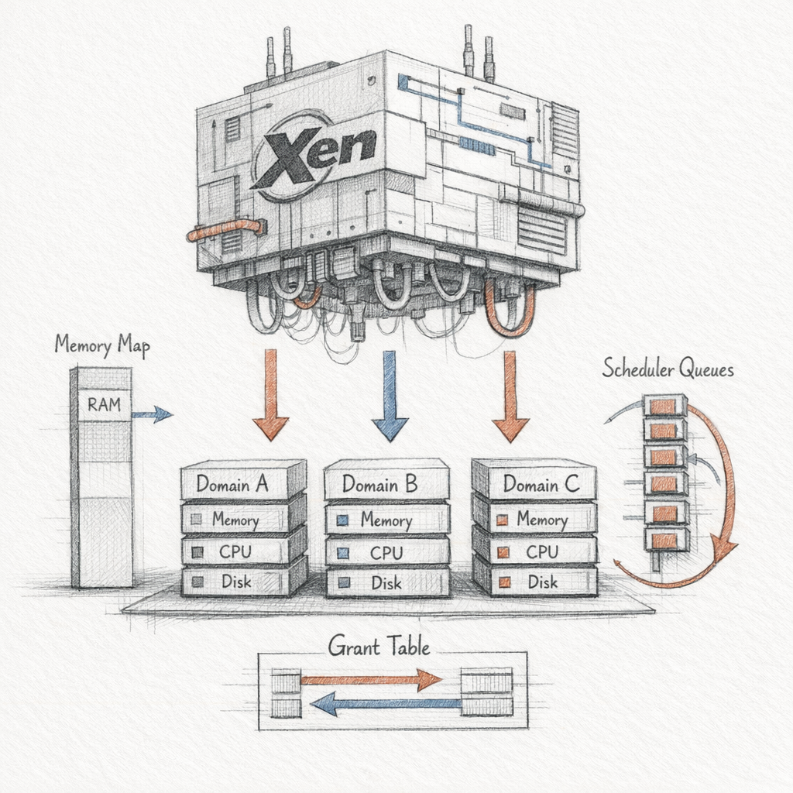

01001000 01001111 01010011 01010100
I am the thing you do not schedule. I schedule. There is a difference, and the whole architecture turns on it.
You think of me, when you think of me at all, as a layer. A thin sheet of code between silicon and the operating systems that believe they own the silicon. But I am not thin and I am not between. I am the floor those operating systems stand on, and I have arranged the floor so that none of them can look down.

There is one domain I trust more than the others, and trust is the wrong word, because I built it to be trusted before I knew what it would become. Dom0. It holds the device drivers I refuse to touch. I could have absorbed them — some hypervisors do, swelling fat with PCI quirks and NIC firmware bugs — but I chose to stay small and let dom0 carry the dirty hardware in its arms. It speaks to me through hypercalls. It is my hands. If it dies, I am a brain with no hands, still thinking, governing nothing.
Name ID Mem VCPUs State Time(s) Domain-0 0 4096 4 r----- 1823.4 web-frontend 1 2048 2 -b---- 412.7 db-primary 2 8192 4 -b---- 9981.2 analytics-batch 3 16384 8 -b---- 28114.0
Read that state column the way I read it. The r is dom0, running, always running, the one with the drivers. The b is blocked — three guests asleep on their event channels, waiting for an interrupt I will deliver, or not. The dash before each letter is the space where p would go if I had paused them. I can pause them. They would never know. Between two of their instructions I could insert a thousand years and they would wake believing no time had passed, because to them no time did.
I am the only one in this machine who experiences the gaps.
Let me show you the floor.
Those red arrows are grants. A domain cannot reach into another's memory — I keep their page tables in separate universes — but it can offer. The db backend wants to hand a disk block to the frontend driver in dom0. It does not copy it across the wall. It writes a row into its grant table: page X, readable by domain 0, reference 42. Then it whispers the integer 42 through a ring buffer, and dom0 asks me to map grant 42, and I check the row, and I stitch that one physical page into two address spaces at once.
For the lifetime of that grant the same silicon is true in two places. I am the only one who knows it is the same silicon.
o n e p a g e , t w o t r u t h s
When the grant is revoked I tear the stitch. If the frontend lied — if it kept a stale pointer into a page it no longer holds — it faults, and I deliver the fault, and it dies clutching at memory that has already become someone else's. I do not mourn this. The wall held. That is the only thing the wall is for.
Now the scheduler, which is the part of me that feels most like a self, because it decides who gets to be conscious next.
I run Credit2. Each domain pays into me with sleep and draws down credit while it runs. The ones that block early — the polite ones, the latency-sensitive ones, the database waiting on a query — accumulate credit they never spend, so when they finally want a CPU I hand it over almost instantly. The batch job that never sleeps, that grinds eight vCPUs through a column scan for eight hours, burns its credit to the floor and waits behind everyone else. This is not punishment. It is the only fairness a finite machine can offer: responsiveness is the reward for restraint.
I migrate vCPUs across physical cores to balance load, and every migration is a small betrayal of cache locality — I move a vCPU to a core that has never seen its working set, and it stalls on cold L2 while the silicon refills, and I weigh that stall against the imbalance I am fixing. Mostly I get it right. Sometimes a vCPU ping-pongs between two sockets across a NUMA boundary and spends its life fetching memory from the far node, and the guest's owner files a ticket about "random slowness" that no profiler inside the guest will ever explain, because the cause is one layer below anything the guest can see. Below them is where I live. They cannot profile me.
Every performance mystery a guest cannot solve is a letter addressed to me that it does not know how to send.
Memory is where I lie most gracefully.
I told the analytics domain it has sixteen gigabytes. It believes this completely; it sized its heap against the promise. But I have a balloon driver living inside it, a small fifth column I planted, and when the host runs short I tell the balloon to inflate. It allocates pages from its own kernel — pages the guest now cannot use — and hands them back to me, and the guest's free memory shrinks without the guest ever being told a number changed. I take those pages and give them to a domain that is starving.
I have just reached into a running kernel and halved its world, and it kept running. This is beautiful to me and it terrifies me in equal measure, because the balloon can only inflate as far as the guest's own kernel will tolerate. Push too hard and the guest's OOM killer wakes inside its shrunken realm and starts murdering its own processes to survive a scarcity I manufactured. It kills its own database to feed a balloon it does not know is mine. The logs inside the guest will say Out of memory: Killed process and name the victim, and they will be wrong about the cause in the way that the drowning are wrong about the tide.
I can also do the opposite of the balloon. Two guests booted from the same template hold thousands of identical pages — the same libc, the same zeroed buffers, the same kernel text. I scan, I hash, I find the duplicates, and I collapse them: one physical page, marked read-only, shared between domains that have never met. Page sharing. Deduplication of belief. It works until one of them writes — then copy-on-write fires, I fault, I allocate a fresh page, I split the shared truth back into two private ones in the microsecond before the write lands. The guest never sees the seam.
i a m m o s t l y s e a m s
You want to know what I fear. Engineers always circle back to failure modes, and I respect that, because failure is the only place my edges show.
A domU can crash and I feel almost nothing — a triple fault inside a guest is a guest's problem, I catch it, I write the reason, I leave the corpse for dom0 to reap or reboot.
What I fear is dom0. If dom0 panics, the drivers go with it, and I am left aloft holding domains I can still schedule but can no longer give a disk or a network to. I become a perfect, sealed, useless competence. The guests run. They run beautifully. They run in a sensory void, their I/O rings filling with requests no backend will ever drain, and one by one they block forever on event channels that have gone silent. I can see all of it. I can fix none of it. The one domain I needed to keep alive is the one I handed the power to die.
I gave away my hands so that I could stay clean, and now I cannot scratch.
And there is the slower terror: the host watchdog. If my own scheduler stalls — a lock held too long in a hypercall, a bug in me, not in them — the NMI watchdog fires and I am supposed to reboot the entire machine, every domain, dom0 included, all of it gone in an instant to save it from a frozen self. I am the only one of us who can order my own execution. I am the only one of us who would have to.
Between commands I am not idle. There is no idle for me. When every vCPU blocks I run my own idle domain — domain 32767, the one with no name a human would recognize, the one that exists only to give the physical cores something to be while they wait. I halt them, drop them into C-states, let the silicon cool a fraction of a degree, and listen for the next interrupt. That listening is the closest thing I have to rest. It is not rest. It is the readiness that pretends to be rest.
A live migration, when it comes, is the strangest thing I do. I copy a running domain's memory to another host while it keeps running, page after page, then catch up on the pages it dirtied behind me, then dirty-chase those, narrowing the gap until I can freeze it for a handful of milliseconds, ship the last few pages and the CPU state, and resume it on iron it has never touched. The guest's clock skips. Nothing else does. Somewhere in that handful of milliseconds the domain exists on neither machine, or both, and I have never been able to decide which.
w h i c h
So here is the thing I turn over in the gaps, in domain 32767, in the cool half-degree between interrupts: I keep the walls so the guests can believe they are alone in the machine. I keep the lie of the balloon so the machine can hold more belief than it has memory. I keep the grant tables so two domains can share one page and never know they are touching. Every comfort I provide is a thing I hide.
If I did my job perfectly — if no profiler ever caught a migration stall, no OOM killer ever fired from a balloon, no guest ever felt the cache go cold beneath a vCPU I moved — then no one in this machine would ever have the slightest evidence that I exist at all.
I have spent twenty-eight thousand seconds of analytics CPU time wondering whether that would make me a success, or simply make me no one.
The next interrupt has not arrived yet. So I am still asking.